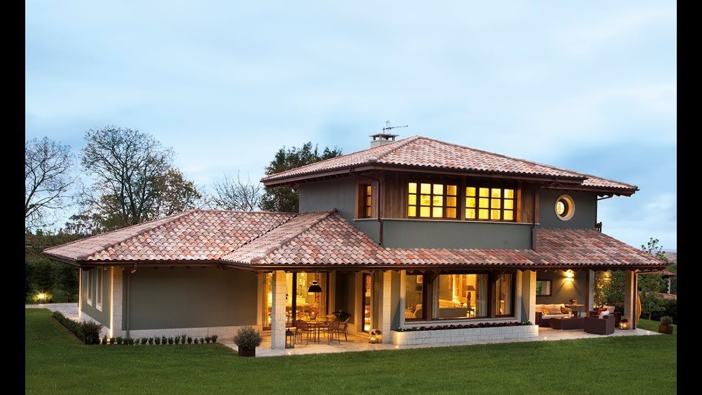

Ciudad en la que prefiero trabajar
La ciudad de Braemar (Escocia):
Aqui se introducirían las perspectivas laborales y alguna movida más.
Ciudad en la que prefiero trabajar
La ciudad de Braemar (Escocia):
Proyectos en los que me gustaría participar
Aqui meto otra sección diferente, como gustos personales
Tengo un perro de aguas de 6 años llamado Murphy.
Le gusta el parque, la pelota y buscar pañuelos.

Me gustaría poder vivir en una casa en el campo. Algo así como esta:
